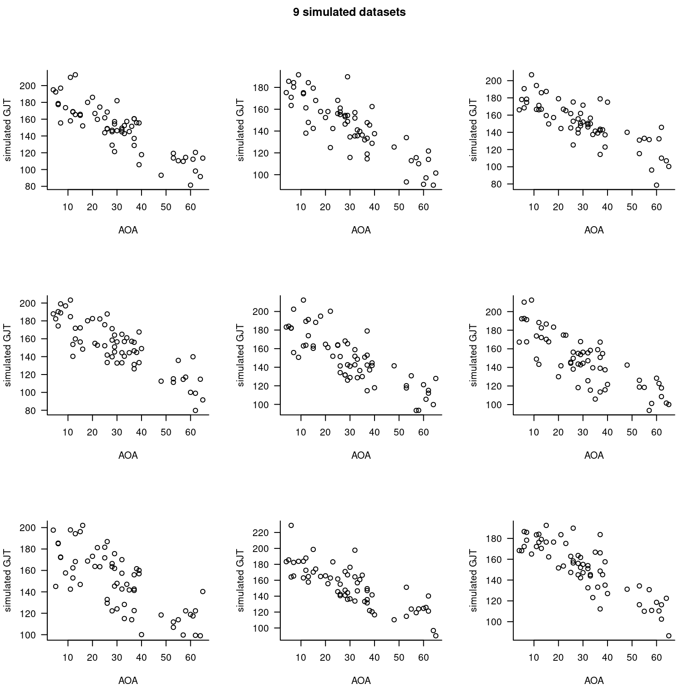
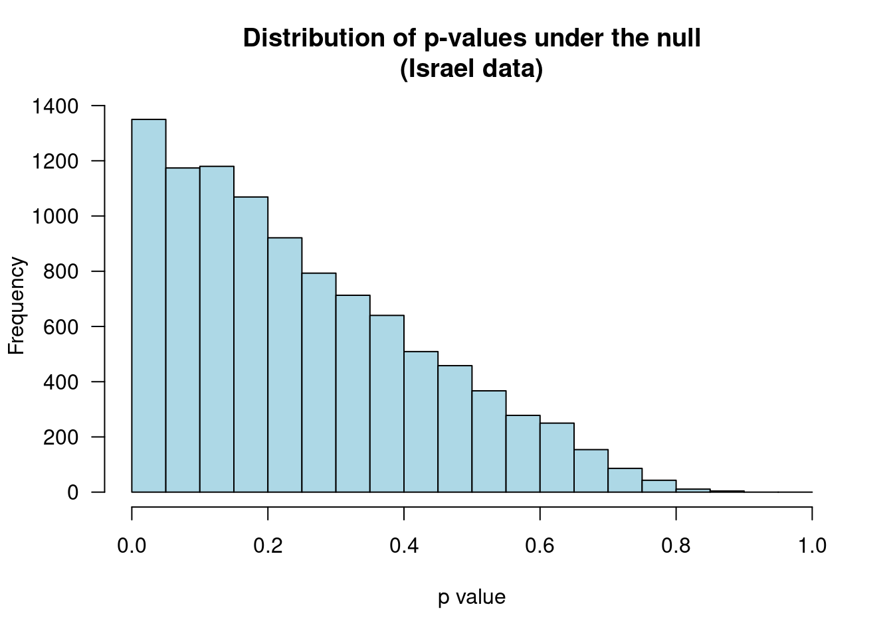
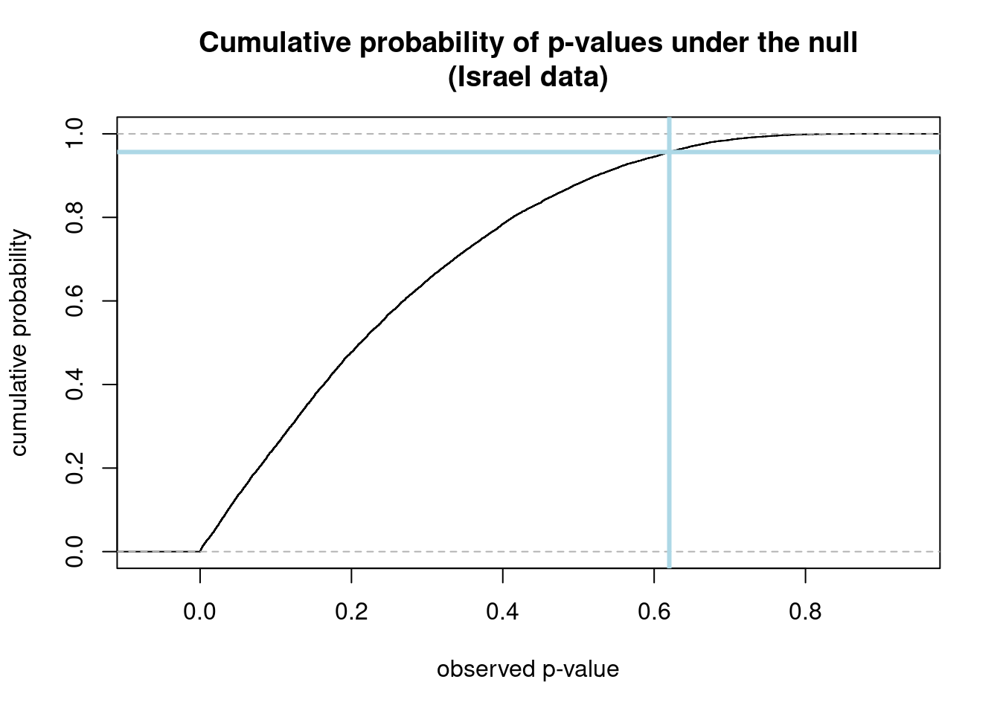
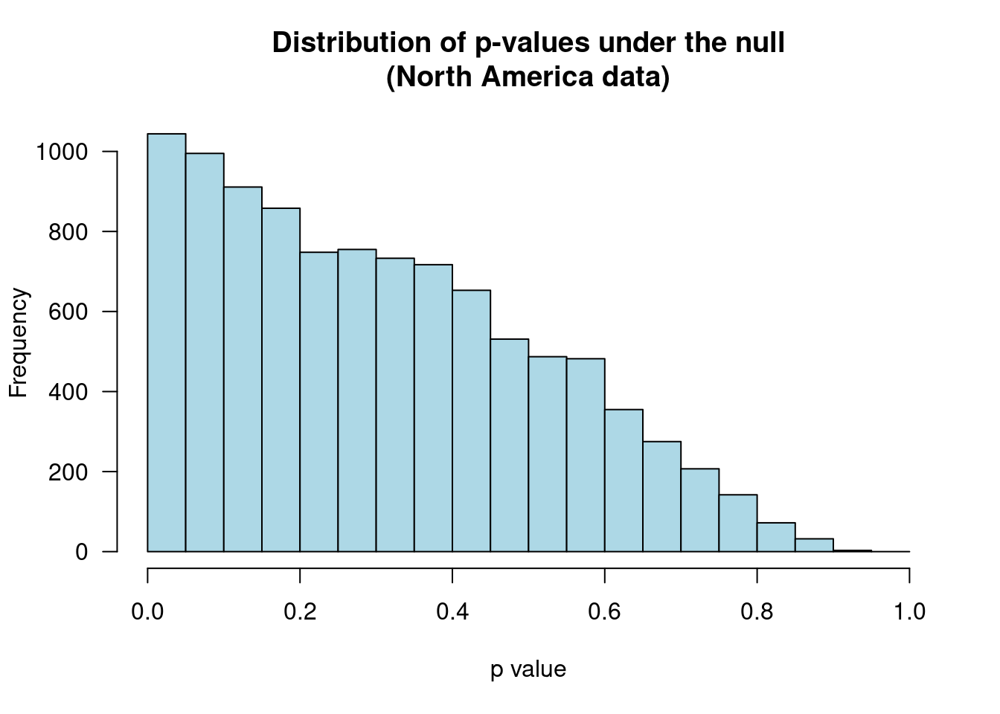

1 - (1 - 0.05)^5[1] 0.2262191Jan Vanhove
August 20, 2014
Last year, I published an article in which I critiqued the statistical tools used to assess the hypothesis that ultimate second-language (L2) proficiency is non-linearly related to the age of onset of L2 acquisition. Rather than using ANOVAs or correlation coefficient comparisons, I argued, breakpoint (or piecewise) regression should be used. But unless the breakpoint is specified in advance, such models are demonstrably anti-conservative. Here I outline a simulation-based approach for calibrating the p-values of such models to take their anti-conservatism into account.
Piecewise (or breakpoint) regression is a pretty self-descriptive term: it’s a regression model with an elbow in the function. For instance, in the graph below, the function relating x to y flattens for x values higher than 0.5.
What is important here is that the analyst has to specify at which x point the regression curve is allowed to change slopes – in the graph above, I had to specify the breakpoint parameter myself (see my article on how this can be done).
Language researchers may be familiar with piecewise regression thanks to Harald Baayen’s excellent Analyzing linguistic data, in which he illustrates a method to automate the selection of the breakpoint. Briefly, this method consists of looping through all possible breakpoints and fitting a piecewise regression model for each of them. Then, the best-fitting model is retained.
In my article on analyses in critical period research, I too adopted this procedure in order to illustrate that the data in the two studies that I scrutinised were not characterised by the predicted non-linearities. What I may have underemphasised in that article, however, is that this breakpoint selection procedure yields a higher-than-nominal Type-I error rate of finding a non-linearity. In plain language, looping through several possible breakpoints increases your risk of finding non-linearities when in fact none exist.
The intuition behind this is probably (hopefully) dealt with in every introductory statistics course. If you run a two-samples t-test with an alpha level of 0.05, you accept a 5% risk to find a significant difference between the two groups even if the populations do not differ. If you run five t-tests on unrelated data, each with an alpha level of 0.05, the risk of finding a non-existing difference is still 5% for each test considered individually – but the global risk (‘familywise Type-I error rate’) is now about 23%:
Similarly, if you loop through, say, 5 possible breakpoints to establish whether a non-linearity exists using piecewise regression, your Type-I error rate goes up. But it won’t be as high as 23% since you’re not conducting the same analysis on unrelated data. It’d be nice if we could calibrate the p-values from a piecewise regression model that suffers from this multiple comparison problem, but I wouldn’t know how to go about it analytically. Instead, I suggest a simulation-based approach. But first, let’s make the problem a bit more concrete by turning to the actual datasets.
In my CPH article, I re-analysed two datasets from DeKeyser et al. (2010). The specifics of these two datasets aren’t too important for our present purposes, so I’ll skip them. The two datasets are available here (Israel data) and here (North America data); the following plots show the relationship between the AOA (age of onset of L2 acquisition) and GJT (a measure of L2 proficiency) variables in both datasets.
Piecewise regressions carried out using the a priori cut-off AOA values specified by DeKeyser et al. (AOA = 18) did not yield significant improvements over straightforward linear models ( p = 0.98 and 0.07 for the Israel and North America data, respectively). In a second series of analyses, I determined the optimal breakpoints following the approach suggested by Baayen. For the Israel data, the optimal breakpoint was located at AOA 6 but a piecewise model still failed to yield a significant improvement over a linear model ( p = 0.62). For the North America data, fitting a breakpoint at AOA 16 did yield such an improvement ( p = 0.047).
As I looped through several breakpoints (from AOA 5 till 19), however, these p-values will be anti-conservative.
As always, a p-value is supposed to express the probability of finding a significant result if the null hypothesis were true. When fitting piecewise regressions, the null hypothesis is that the relationship between the two variables is linear. We don’t know precisely how a linear relationship between our two variables looks like under the null hypothesis (intercept, slope and dispersion parameters) but a reasonable starting point is to fit a linear model to the data we have and take its parameters as the population parameters. After all, they’re our best guess. We’re then going to simulate new datasets based on this model.
By way of illustration, the following R code reads in the Israel data and uses it to create 9 linear AOA-GJT relationships with similar properties.
# Read in Israel data
dat <- read.csv("http://homeweb.unifr.ch/VanhoveJ/Pub/papers/CPH/DeKeyser2010Israel.csv")
# Fit linear model
mod <- lm(GJT ~ AOA, data = dat)
# Create grid for 9 plots
par(mfrow=c(3,3),
oma=c(0, 0, 2, 0), # room for title
bty="l", las="1")
# Draw 9 plots with simulated data
plots <- replicate(9,
plot(dat$AOA, unlist(simulate(mod)),
xlab="AOA", ylab="simulated GJT"))
title(main="9 simulated datasets", outer=TRUE)
As you can see, some of the simulated GJT values lie outside the range of the original GJT data. DeKeyser et al. used a test that consisted of 204 yes/no items, so values higher than 204 are impossible whereas a score of 102 corresponds to random guessing. Our regression model doesn’t know that 102 and 204 represent the de facto limits of the GJT variable, and while we could try to use censored regression models to deal with that, I’m just going to tell R to set values higher than 204 to 204 and values lower than 102 to 102. The following function, generateBreakpointData.fnc, does just that and, while we’re at it, rounds off the simulated values to integers.
Next, we’re going to fit a piecewise model with a specified breakpoint to the simulated data. Here, the breakpoint is at AOA 12.
Here’s the outcome of running the two commands after each other:
dat <- read.csv("http://homeweb.unifr.ch/VanhoveJ/Pub/papers/CPH/DeKeyser2010Israel.csv")
straight.lm <- lm(GJT ~ AOA, dat)
AOAvals <- dat$AOA
Data <- generateBreakpointData.fnc(AOA = AOAvals)
fitBreakpoint.fnc(Data = Data, Breakpoint = 12) pval dev
1 0.3074955 11913.35The values that are returned are the p-value of the test whether the slope is different before from after the breakpoint and the model’s deviance (i.e. lack of fit).
Next, we’re going to loop through all possible breakpoints while jotting down the p-values and deviances. I say ‘loop’, but in R you really want to vectorise your repeated calculations as much as possible. This is what the mapply line below does. The generateFitBreakpoint.fnc (among other programming-related stuff, I’m terrible at naming functions) takes two arguments, the lowest considered breakpoint value and the higher considered breakpoint value, and returns the p-value associated with the optimal breakpoint model as well as the location of said breakpoint.
generateFitBreakpoint.fnc <- function(MinBreakpoint = min(AOAvals) + 1,
MaxBreakpoint = 19) {
Data <- generateBreakpointData.fnc()
Results <- mapply(fitBreakpoint.fnc,
Breakpoint = MinBreakpoint:MaxBreakpoint,
MoreArgs=list(Data = Data))
Summary <- data.frame(Breakpoint = MinBreakpoint:MaxBreakpoint,
PValues = unlist(Results['pval',]),
Deviances = unlist(Results['dev',]))
BestP = Summary$PValues[which.min(Summary$Deviances)]
BestBP = Summary$Breakpoint[which.min(Summary$Deviances)]
return(list(OptimalBP = BestBP,
OptimalP = BestP))
}All that is left to do now is to repeat that process a couple of thousand times and inspect the distribution of the recorded p-values. The code below simulates 10,000 datasets based on DeKeyser et al.’s Israel data, loops through each of them to determine the individual best-fitting breakpoint models (possible breakpoints between AOA 5 and 19) and saves the associated p-values.
(I ran this code on a Linux terminal. It may not work on other systems, in which case you can let me know.)
# Load 'parallel' package for faster computing.
library(parallel)
# Distribute the job among a couple of CPU cores
cl <- makeCluster(detectCores() - 1)
# Supply the other cores with the information necessary
clusterExport(cl, c("dat", "straight.lm", "AOAvals",
"generateBreakpointData.fnc",
"fitBreakpoint.fnc",
"generateFitBreakpoint.fnc"))
# Run 10000 times
ReplicateResults <- parSapply(cl, 1:10000,
function(i, ...) generateFitBreakpoint.fnc())
# Save to disk
write.csv(ReplicateResults, "breakpointsimulationIsrael.csv", row.names=FALSE)If the null hypothesis is true, p-values should be distributed uniformly between 0 and 1. As the following graph shows, however, by looping through several possible breakpoints, the p-value distribution is skewed towards 0. Out of 10,000 datasets simulated under the null, 1350 produced a significant but spurious non-linearity – more than double the nominal Type-I error rate of 5%.
# Set graphical parameters
par(mfrow=c(1,1), bty="l", las="1")
# Read in data (and transpose for clarity's sake)
resIsr <- t(read.csv("breakpointsimulationIsrael.csv"))
# Draw histogram of p-values
hist(resIsr[,2], col="lightblue", breaks=seq(0,1,0.05),
xlim=c(0,1),
xlab="p value", ylab="Frequency",
main="Distribution of p-values under the null\n(Israel data)")
FALSE TRUE
8650 1350 To calibrate the observed p-value against this skewed distribution, we just look up the proportion of p-values generated under the null equal to or lower than the observed p-value. I observed a p-value of 0.62 after looping through breakpoints from AOA 5 till 19. 0.62 lies in the 95.6th quantile of the simulated p-value distribution (i.e. about 95% of p-values are lower than 0.62), so the calibrated p-value is 0.96 rather than 0.62:
plot(ecdf(resIsr[,2]),
xlab="observed p-value",
ylab="cumulative probability",
main="Cumulative probability of p-values under the null\n(Israel data)")
abline(v=0.62, col="lightblue", lwd=3)
table(resIsr[,2] <= 0.62)
FALSE TRUE
436 9564 
I’ll skip the code for simulating the p-value distribution for the North America analyses (just read in the other dataset and go through the same steps) and get straight to the simulated distribution:

For the North America data, the estimated Type-I error rate is about 10.4%, which is pretty similar to the one for the Israel data. (Not surprisingly, since the linear models for both datasets are remarkably similar.) The observed p-value of 0.047 lies in the 9.8th quantile of the simulated distribution, so the calibrated p-value is 0.098 rather than 0.047.
Looping through different breakpoints increases the Type-I error rate of piecewise regression models.
The observed p-values can be calibrated against the distribution of p-values under the simulated null.
The distribution of simulated p-values will vary from dataset to dataset and will depend on the range of breakpoints considered (the smaller the range, the smaller the skew). Lastly, multiple comparison problem doesn’t only apply when following the automatised procedure suggested by Baayen: even if you look at the data first and then decide which breakpoint to fit, your p-values will be off if you don’t take into account on which breakpoints you could have decided had the data come out differently (see Gelman and Loken for a treatment of a more general version of this problem).
─ Session info ───────────────────────────────────────────────────────────────
setting value
version R version 4.3.1 (2023-06-16)
os Ubuntu 22.04.3 LTS
system x86_64, linux-gnu
ui X11
language en_US
collate en_US.UTF-8
ctype en_US.UTF-8
tz Europe/Zurich
date 2023-08-25
pandoc 3.1.1 @ /usr/lib/rstudio/resources/app/bin/quarto/bin/tools/ (via rmarkdown)
─ Packages ───────────────────────────────────────────────────────────────────
package * version date (UTC) lib source
cachem 1.0.6 2021-08-19 [2] CRAN (R 4.2.0)
callr 3.7.3 2022-11-02 [1] CRAN (R 4.3.1)
cli 3.6.1 2023-03-23 [1] CRAN (R 4.3.0)
crayon 1.5.2 2022-09-29 [1] CRAN (R 4.3.1)
devtools 2.4.5 2022-10-11 [1] CRAN (R 4.3.1)
digest 0.6.29 2021-12-01 [2] CRAN (R 4.2.0)
ellipsis 0.3.2 2021-04-29 [2] CRAN (R 4.2.0)
evaluate 0.15 2022-02-18 [2] CRAN (R 4.2.0)
fastmap 1.1.0 2021-01-25 [2] CRAN (R 4.2.0)
fs 1.5.2 2021-12-08 [2] CRAN (R 4.2.0)
glue 1.6.2 2022-02-24 [2] CRAN (R 4.2.0)
htmltools 0.5.5 2023-03-23 [1] CRAN (R 4.3.0)
htmlwidgets 1.6.2 2023-03-17 [1] CRAN (R 4.3.1)
httpuv 1.6.11 2023-05-11 [1] CRAN (R 4.3.1)
jsonlite 1.8.7 2023-06-29 [1] CRAN (R 4.3.1)
knitr 1.39 2022-04-26 [2] CRAN (R 4.2.0)
later 1.3.1 2023-05-02 [1] CRAN (R 4.3.1)
lifecycle 1.0.3 2022-10-07 [1] CRAN (R 4.3.0)
magrittr 2.0.3 2022-03-30 [1] CRAN (R 4.3.0)
memoise 2.0.1 2021-11-26 [2] CRAN (R 4.2.0)
mime 0.10 2021-02-13 [2] CRAN (R 4.0.2)
miniUI 0.1.1.1 2018-05-18 [1] CRAN (R 4.3.1)
pkgbuild 1.4.2 2023-06-26 [1] CRAN (R 4.3.1)
pkgload 1.3.2.1 2023-07-08 [1] CRAN (R 4.3.1)
prettyunits 1.1.1 2020-01-24 [2] CRAN (R 4.2.0)
processx 3.8.2 2023-06-30 [1] CRAN (R 4.3.1)
profvis 0.3.8 2023-05-02 [1] CRAN (R 4.3.1)
promises 1.2.0.1 2021-02-11 [1] CRAN (R 4.3.1)
ps 1.7.5 2023-04-18 [1] CRAN (R 4.3.1)
purrr 1.0.1 2023-01-10 [1] CRAN (R 4.3.0)
R6 2.5.1 2021-08-19 [2] CRAN (R 4.2.0)
Rcpp 1.0.11 2023-07-06 [1] CRAN (R 4.3.1)
remotes 2.4.2 2021-11-30 [2] CRAN (R 4.2.0)
rlang 1.1.1 2023-04-28 [1] CRAN (R 4.3.0)
rmarkdown 2.21 2023-03-26 [1] CRAN (R 4.3.0)
rstudioapi 0.14 2022-08-22 [1] CRAN (R 4.3.0)
sessioninfo 1.2.2 2021-12-06 [2] CRAN (R 4.2.0)
shiny 1.7.4.1 2023-07-06 [1] CRAN (R 4.3.1)
stringi 1.7.12 2023-01-11 [1] CRAN (R 4.3.1)
stringr 1.5.0 2022-12-02 [1] CRAN (R 4.3.0)
urlchecker 1.0.1 2021-11-30 [1] CRAN (R 4.3.1)
usethis 2.2.2 2023-07-06 [1] CRAN (R 4.3.1)
vctrs 0.6.3 2023-06-14 [1] CRAN (R 4.3.0)
xfun 0.39 2023-04-20 [1] CRAN (R 4.3.0)
xtable 1.8-4 2019-04-21 [1] CRAN (R 4.3.1)
yaml 2.3.5 2022-02-21 [2] CRAN (R 4.2.0)
[1] /home/jan/R/x86_64-pc-linux-gnu-library/4.3
[2] /usr/local/lib/R/site-library
[3] /usr/lib/R/site-library
[4] /usr/lib/R/library
──────────────────────────────────────────────────────────────────────────────